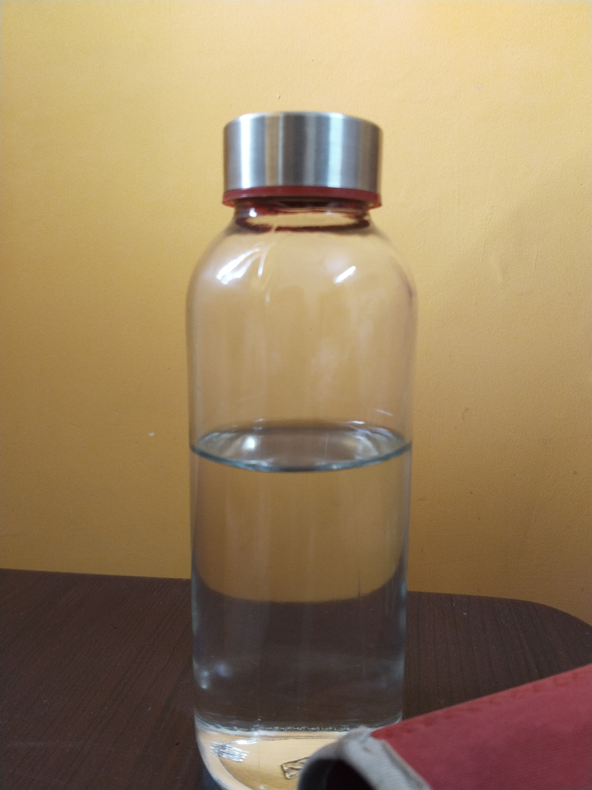
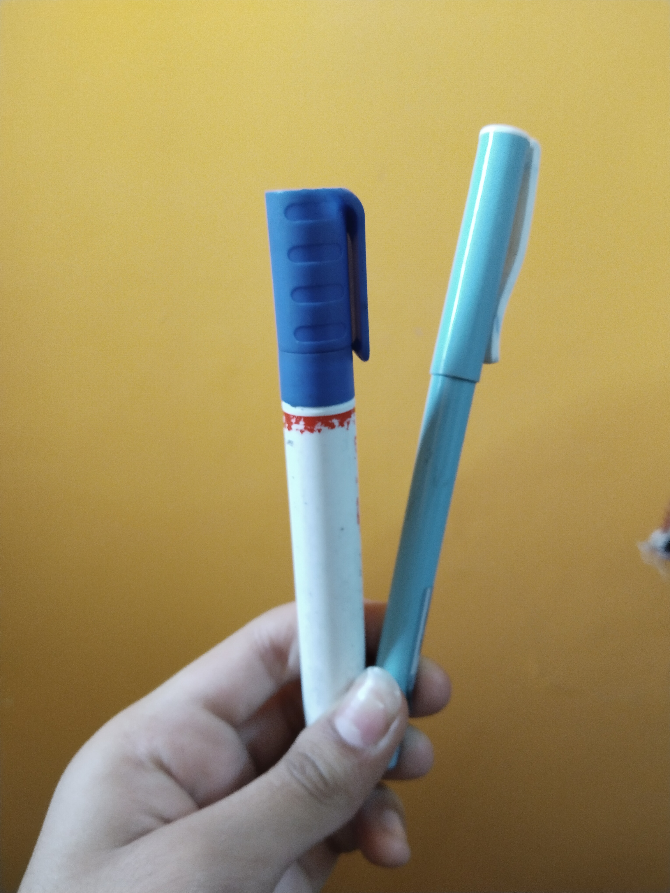
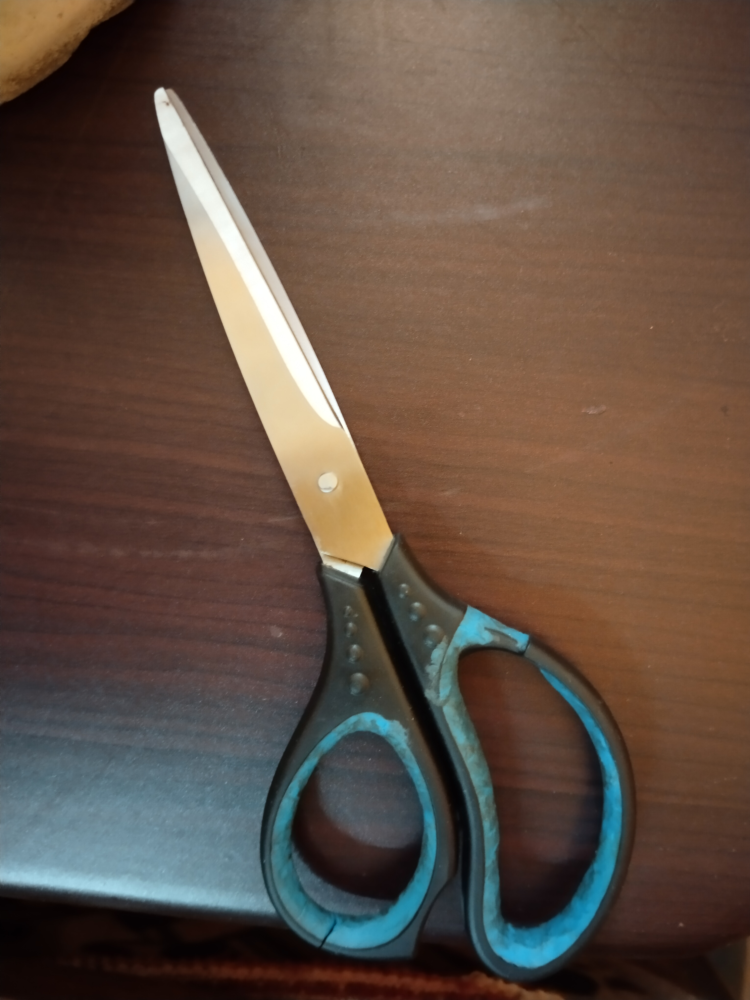
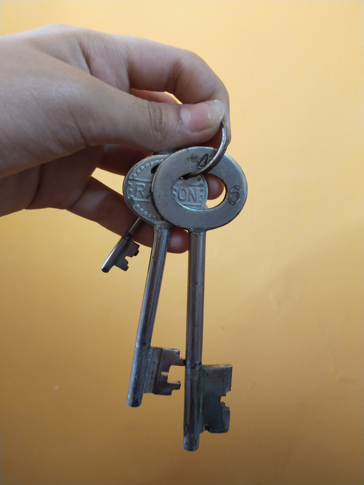
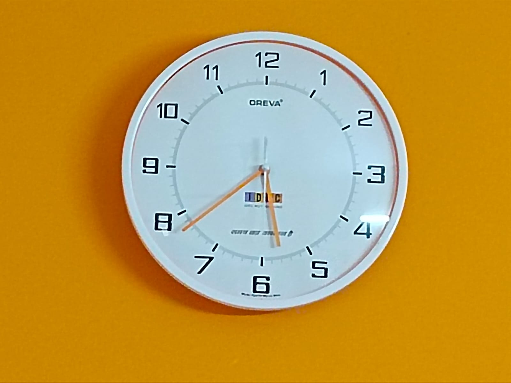
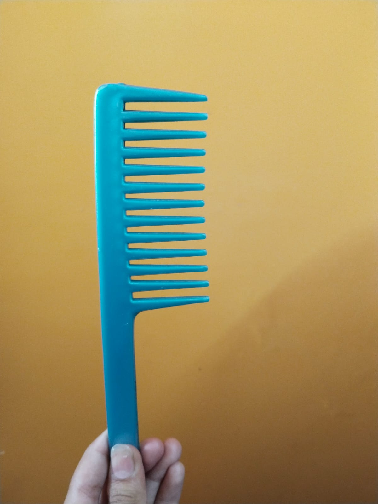

google lens vs mobilenet model
case study of google lens & mobilenet model

Water Bottle
Output on Google Lens -
Glass BottleOutput on MobileNet -
Water BottleConclusion - Both Google lens & MobileNet identified the object correctly.

Marker/Pen
Output on Google Lens -
Whiteboard MarkerOutput on MobileNet -
PenConclusion - Google Lens is more accurate.
Book
Output on Google Lens -
Be Careful What You Wish For - Novel by Jeffrey ArcherOutput on MobileNet -
LighterConclusion - Google Lens recognized the object correctly.

Scissor
Output on Google Lens -
Stainless steel scissorOutput on MobileNet -
Pair of scissorsConclusion - Google Lens is more accurate.

Keys
Output on Google Lens -
Two keysOutput on MobileNet -
Pair of keysConclusion - Both Google lens & MobileNet identified the object correctly.
 Mobile
Mobile
Output on Google Lens -
Samsung Galaxy J2 (2016)Output on MobileNet -
CellphoneConclusion - Google Lens is more accurate.

Clock
Output on Google Lens -
Oreva plastic glass wall clockOutput on MobileNet -
Analog clockConclusion - Google Lens is more accurate.

Comb
Output on Google Lens - Grooming comb
Output on MobileNet -
CombConclusion - Both Google lens & MobileNet identified the object correctly.
Final Result
From the above outputs of both Google Lens & MobileNet, it concludes that Google Lens is the best classification model. We tested eight objects and Google Lens was able to guess all of them correctly while MobileNet only guessed 3 of them correct.